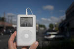
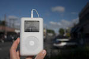

Добро пожаловать туда, где можно продемонстрировать свой iPod, где бы вы ни находились. Хотите присоединиться к веселью? Всё, что вам нужно, - это любой iPod: от раннего iPod Classic до последней версии iPod Nano, от самого маленького iPod Shuffle до самого большого iPod Video, а также цифровая камера. Просто сделайте снимок своего iPod в любимом месте, и мы будем рады разместить его на сайте myPod. Итак, чего вы ждёте?
Я и мой iPod в Сиэтле! Здесь видна башня Спейс Нидл. И не видно 628 кафе.
Это несколько фотографий из Бирмингема. Мы повстречали здесь несколько людей, страстно влюблённых в свои iPod. Взгляните на классические британские красные телефонные будки!